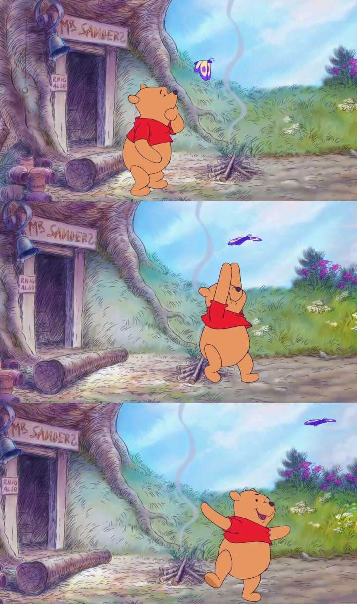

出国留学网专题频道圣诞节的由来栏目，提供与圣诞节的由来相关的所有资讯， 希望我们所做的能让您感到满意！ 圣诞节，是教会年历的一个传统节日，
它是基督徒庆祝耶稣基督降生的庆祝日。在圣诞节， 大部分的基督公教教堂都会先在12月24日的圣诞夜，
亦即12月25日凌晨举行子夜弥撒，而部分基督新教派别也会举行子夜敬拜， 此两大基督教分支均会在圣诞夜有报佳音活动，然后在12月25日庆祝圣诞节。
圣诞老人（Santa Claus）是西方神话传说中的人物，圣诞节代表角色之一，普遍被认为是基督教圣人圣·尼古拉斯的衍生形象。 然后偷偷把礼物放在好孩子床头的袜子里或壁炉旁的圣诞树下。
圣诞老人头戴红色帽子，穿着红色棉衣和靴子，有着大大白色胡子，拿着装有礼物的大袋子。 他总在圣诞节前夜出现，乘驾驯鹿拉的雪橇，挨家挨户地从烟囱进入屋里，
圣诞树（Christmas tree）是圣诞节最有名的传统摆设之一，是指用灯烛和装饰品装点起来的常青树。 它最早出现在古罗马12月中旬的农神节，现在通常人们在圣诞前后把一棵常绿植物放在屋里或者户外，用圣诞灯和彩色的装饰物装饰，并把一个天使或星星放在树的顶上。
更多内容可以百度一下